一、开场与前言：研究汇率对全球资产影响的三问三体系
本期接着讲汇率，主题是汇率和全球资产的联动机制。在进入正题前，有三个事情必须弄清楚：
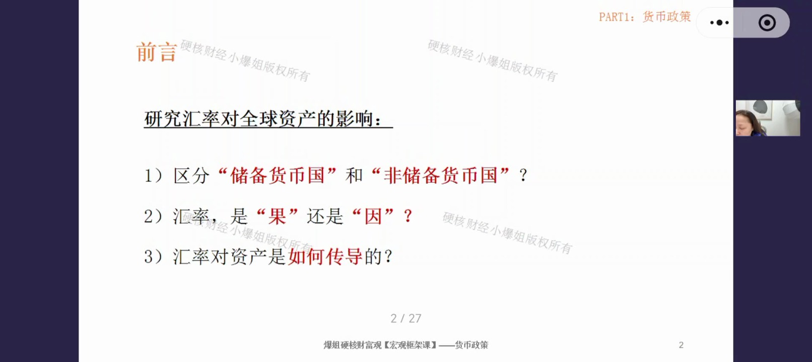
- 第一问：区分"储备货币国"和"非储备货币国"？——谁是储备货币国？美国。
- 第二问：汇率，是"果"还是"因"？——很多资产涨跌不是因为汇率涨跌导致，这个后边会讲到。
- 第三问：汇率对资产是如何传导的？
本课框架：围绕这三个问题，主要讲三个货币体系——美元体系、日元体系、人民币体系。三者都很有代表性：美元体系绕不开；日元体系很特殊；人民币体系因为我们是中国人而重要。掌握这三个体系，基本就能透视全球汇率体系。
二、通用原则：国债与汇率的"反向"关系及双杀/双升异常
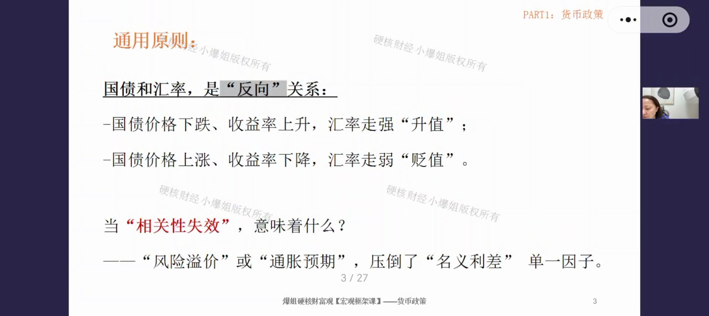
通用原则：一个国家的国债和汇率，呈反向关系——
- 国债价格下跌 → 收益率上升（利率走高）→ 汇率走强升值；
- 国债价格上涨 → 收益率下降（利率走低）→ 汇率走弱贬值。
简单记：利率高，汇率高；利率低，汇率低。但国债的收益率与价格正好反方向，这个关系在极端情况下会失效。
异常一：债汇"双杀"——国债大跌 + 汇率暴跌
一旦出现同方向下跌，说明相关性失效了，背后是"风险溢价"或"通胀预期"压倒了"名义利差"单一因子。这通常出现在债务周期的极端阶段，即财政失衡很严重、主权信用出现问题时：
- 两种典型情形：① 新兴国家发生巨大危机；② 发达国家主权信用发生动摇。都会伴随资本外逃和信用危机。
- 投资者恐慌点：担心通胀失控、担心违约风险（本金清零）——所以不但抛售国债，还恐慌性抛售该国货币换硬通货。
- 案例（2022年9月英国）：特拉斯政府推出超级大规模减税计划（迷你预算），引发英镑和英国国债暴跌，最终政策取消、首相辞职。底层原因：市场对英国财政纪律失去信任。
异常二：债汇"双升"——国债大涨 + 汇率走强
通常来自避险逻辑：市场对一国经济极度悲观（通缩预期）或发生流动性危机时，资金从风险资产（股票、大宗商品）撤出，涌向国债和本币——买国债的人多了价格上升，买本币的人多了汇率上升。
- 此时资金不关心收益高低，只关心本金安全 + 流动性（想走时能走）。
- 典型案例：2008年金融危机最危急时——美债价格上升，同时美元汇率上升（美债美元双升）。
- 容易出现双升的国家：避险国（美国、日本、瑞士），或贸易顺差国且处于通缩（如中国、以前的日本）。
口诀：债汇双杀 = 财政失衡 + 主权信用担忧（最强信号之一）；债汇双升 = 避险情绪主导。美元和日元在双升场景中最特殊，后边会专门讲。
三、美元体系总览：储备货币的五大特殊性
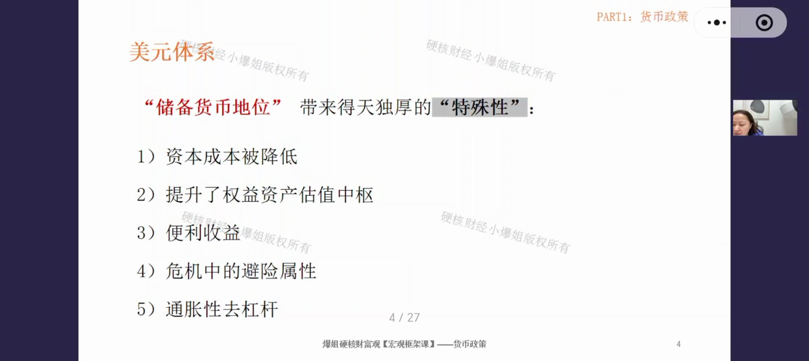
美元体系最特殊的一点：它是绝无仅有的储备货币，天然拥有得天独厚的优势。具体有五个：
- 1）资本成本被降低——全球结构性买盘压低美债收益率；
- 2）提升了权益资产估值中枢——无风险利率之锚推高美股估值；
- 3）便利收益——全球最深最快的流动性，让投资者愿意多付钱；
- 4）危机中的避险属性——危机时刻反而自我强化；
- 5）通胀性去杠杆——通过印钞化解债务。
下面逐一展开。其中第一点（资本成本）是整个体系里最核心、最根本的逻辑，吃透它，美国、美元、国债、全球流动性这些逻辑就能全部串起来。
四、特殊性①：资本成本被降低（结构性买盘压低美债收益率）
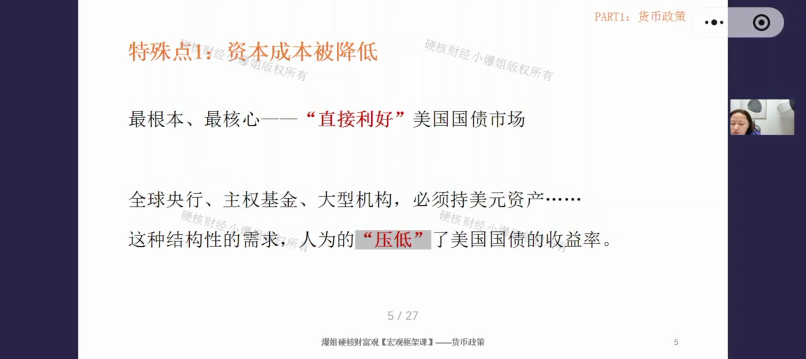
关键问题：美国国债问题这么多，为什么还有源源不断的买盘？原因特别简单——全球央行、主权基金、大型机构必须持有美元资产，因为他们需要用美元资产做三件事：
- ① 国际贸易结算：只能用美元（除点对点货币互换等小范围例外）；
- ② 作为外汇储备稳汇率：本币汇率超调时手里得有美元去干预；
- ③ 市场波动时避险：资产得有地方去。
能同时满足这三个条件的全球资产只有一个：美国国债。所以不管美债利率高低、市场情绪好坏、美国财政是否"放飞自我"，全球机构都在持续买入——形成结构性买盘（去美元化只是买得少了，不是不买）。
量化结论：这种结构性买盘人为压低了美债收益率大约50~100个基点（0.5%~1%）。相当于美国每年能以至少少1%的成本融资——啥也没干，只凭全球储备货币地位，就获得巨大的融资优势，这是全球任何国家都比不了的。
五、特殊性②：提升资产估值中枢（无风险利率之锚）
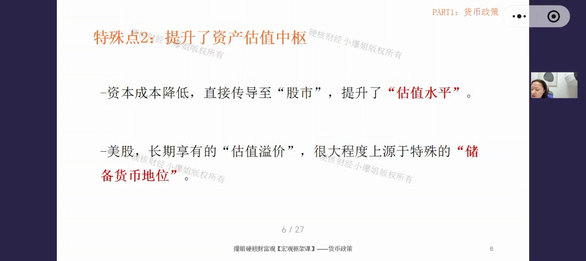
底层逻辑：美国国债是全球金融体系的无风险利率之锚——全球任何资产定价都要从这个利率开始算。而给股票定价用的现金流折现模型（DCF）里，权重最大的就是无风险利率：
- 无风险利率下降 → 折现率下降 → 未来现金流折回现在的现值变大 → 股票估值（PE）抬升；
- 所以资本成本越低，同样的公司、同样的利润，市场给的估值更高。
美股长期估值溢价的底层原因：不否认美国企业科技强、盈利高，但还有一个被忽略的因素——储备货币地位。美国人买美国资产先天没有汇率风险；而进入其他市场一定要承担汇率成本。所以纳指、标普长期比别人贵，是储备货币体系给美股做的"常年加分项"。
结论：美股高估值的两大底层加分项 = ① 无汇率风险（储备货币红利）② 低无风险利率（结构性买盘压低）。
六、特殊性③：便利收益（全球最深最快的流动性）
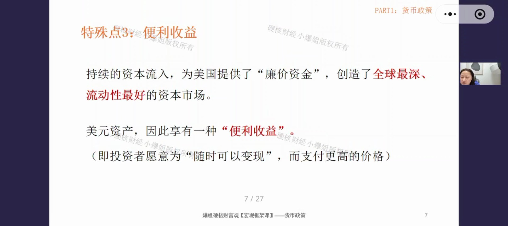
为什么全球的钱爱往美国跑？因为美国拥有最深、流动性最好、最容易把资产变现的金融市场——想买马上买得到，想卖马上卖得出。资金体量越大，这种流动性越珍贵（小资金无所谓，大资金进出难）。
- 持续的资本流入 = 为美国提供"廉价资金"，站在源源不断的水龙头下，获得低成本融资；
- 久而久之，美元资产多了一层"便利收益"——投资者愿意为"随时可以变现"支付更高的价格；
- 两个国家资产投资回报相同的情况下，投资者更愿意选美国资产，因为它带来额外的流动性收益。
要点：便利收益是美元霸权非常关键、又非常隐蔽的底层逻辑——全世界找不出第二个地方能有这么好的流动性。
七、特殊性④：危机中的避险属性（氧气罐与超级停车场）
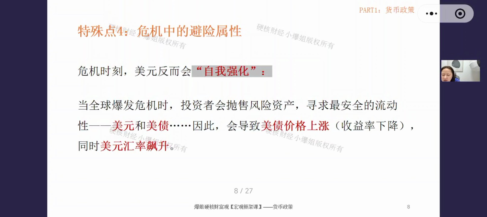
很多人想不通：金融危机明明是从美国开始的，为什么全球一出事大家还一窝蜂买美元？核心在于：危机一旦爆发，全球对美元的需求会瞬时放大——
- 大量债务（跨境债务、贸易融资、外汇合约）以美元计价，美国以外的公司、银行、政府等于变相借了一堆美元债，平时赚本币；
- 危机时收入下降、资产暴跌，但杠杆还在、钱要还、保证金要补——所有借美元的人只能卖本币、卖资产、卖能卖的一切去换美元还债补仓。此时美元不再是货币，而是"防爆仓、防爆雷、防破产的氧气罐"，需求暴增 → 美元升值。
第二个原因：美债是"超级停车场"。央行、主权基金、大型机构资金量庞大，避险时必须找一个够大、够深、能随时变现的市场：
- 黄金：盘子小，几千亿上万亿资金一进，价格飞上天，想出来很难；
- 欧元资产：欧盟不是一个国家，规则不一致；
- 人民币资产：经济体量大，但资本账户未完全开放，进出有门槛有管控；
- 转一圈回来，只有美国国债市场够大够深，能装下全球恐慌资金——全球恐慌时它是唯一能承载的"航母"。
第三个原因：储备货币地位 + 偿付能力。避险属性必须建立在①法律制度稳定、②偿付能力与偿付意愿之上。虽然是"比较出来的"：跟大多数新兴市场比，美国制度相对稳定、对资本和资产的保护相对靠谱。
第四个原因：美元网络效应。石油、粮食、金属等大宗商品大多用美元定价，各国要买油买粮、稳汇率稳进口，就必须持有美元储备。大家都在用美元，你不用就做不了这些事——像"全世界都讲英文，你不讲英文就没法对话"。
本质：比烂机制。不是美元有多好，而是市场上没得选。假设美国经济出问题，新兴市场大概率问题更大（资本外逃、汇率暴跌、债务集中爆发）；欧洲有结构性麻烦；日本因套息交易可能先倒下——资金田忌赛马，比出一个相对好的，还是选美元。
八、特殊性⑤：通胀性去杠杆（印钞解决债务）
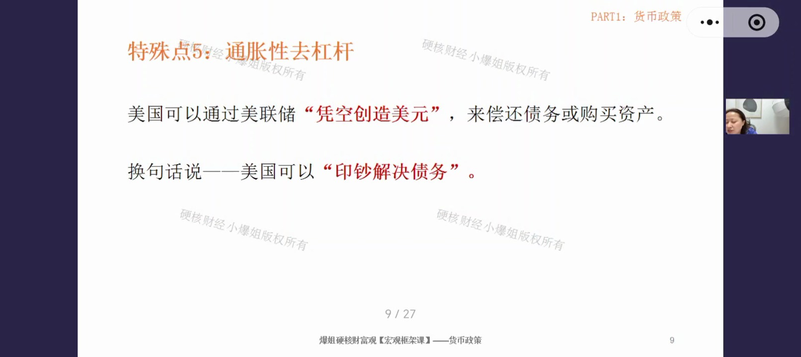
为什么美国可以印钞救市，其他国家不行？
- 新兴国家（阿根廷、土耳其、97年亚洲国家）经济繁荣时借了大量美元外债，危机一来：不能印美元、不能控制美元供给 → 资本外逃、汇率崩溃、恶性通胀；
- 它们能做的只有一件事——加息（减少利差、防止资金外流）。但经济本来就很脆弱，大幅加息 = 雪上加霜，做什么都只是坏上更坏。
- 美国不一样：作为全球储备货币，它可以加大通胀来实现去杠杆、去债务。
2008年案例：危机虽严重，美国却没发生资本外逃（避险属性让全球资金反而涌入）。美联储印钱把利率打到0、启动QE，把通缩压力逆转回来；底层逻辑是：通过印钞把名义增速拉到比名义利率更高，收入增长快于债务利息增长 → 债务负担相对变少。
通胀性去杠杆 = 通过通胀把债务的杠杆逐步消化掉。这是储备货币特有的"特权"。
九、强美元周期的影响：一阶效应 + 二阶效应
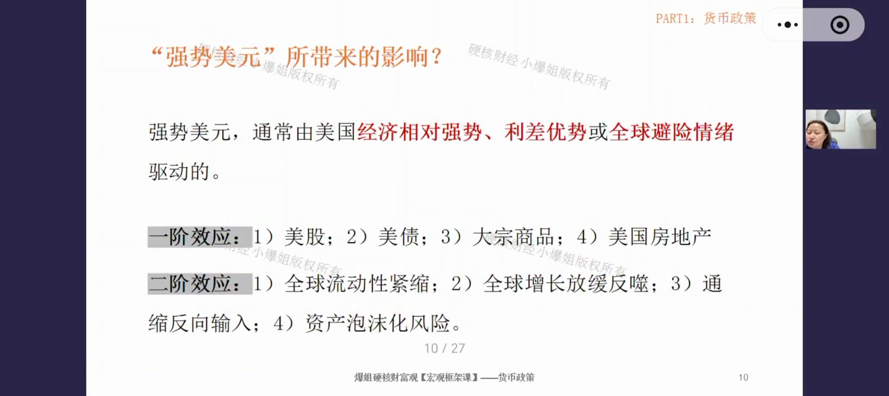
任何货币都有强、弱两个周期，分析影响时分为两层：一阶效应 = 直接产生的影响；二阶效应 = 连锁反应、长远影响。强美元通常由美国经济相对强势、利差优势或全球避险情绪驱动。
一阶效应（直接影响）
- 股市：对跨国公司利空（海外收入换回美元缩水 + 出口竞争力下降 → 利润挤压、股价承压）；对内需/进口依赖型企业利多（海外进口原材料变便宜 → 采购成本下降 → 利润上升）。
- 固收（国债/信用债）：取决于美元为何走强——因加息走强 → 债券利空（收益率上升、价格下跌）；因避险走强 → 债券利多（资金流入美债、价格上涨）。两股力量博弈，要看谁获胜。
- 大宗商品：利空。大宗商品以美元计价，美元走强 → 非美国家买入变贵 → 需求下降 → 价格承压。
- 美国房地产：偏负面。美元走强 → 外国投资者买房变贵 → 需求下降（一线市场尤其明显，多靠海外资金推动）。
二阶效应（连锁深远影响）
- 全球流动性紧缩：全球借了大量美元债务，美元走强 → 还债负担加重 → 拿本币换美元还债 → 资本外流、本币贬值螺旋，成本进一步上升。高外债国家被"碾压"；应对手段（消耗外储护盘 / 大幅加息）都会严重打击经济。
- 全球增长放缓并反噬美国：新兴市场衰退 → 大宗商品价格下跌 → 全球贸易放缓 → 全球需求降低 → 美国跨国企业海外收入利润下降。强美元的反噬效应。
- 通缩反向输入：美元走强 → 进口商品/原材料变便宜 → 本国物价下降 → 相当于从外部输入通缩。经济过热时它成为压制CPI的力量。
- 资产泡沫化风险：强美元吸引全球资金涌入美股、美债（尤其大型科技股）→ 资产价格与企业业绩基本面脱节 → 泡沫积聚，泡沫破灭则是大风险。
总结：汇率影响是多维度、立体的——既有直接冲击，又有连锁反应、深远影响。做跨境资产时考虑的维度要特别多，不能只看单一数字。
十、美元与美股：没有铁律的相关性
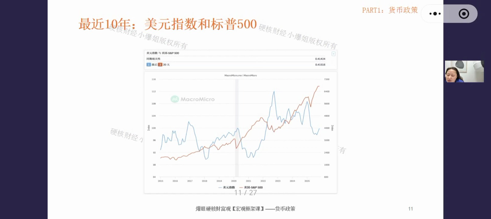
先给结论：美元和美股之间没有明确固定的正相关或负相关，长期相关性较弱，并随经济周期切换而变化（有时同涨同跌，有时一强一弱）。近10年整体呈现中等偏强正相关（美元指数与标普500同期相关性 0.41424，滞后20天相关性 0.41516），但不是绝对的。
什么情况下出现"美元强、美股弱"（偏负相关）？
- 跨国公司业绩被汇率吃掉：标普500里约三到四成是跨国企业，海外收入换回美元缩水 → 盈利指标变差 → 股价承压；
- 美国出口竞争力被削弱：美元强 → 美国产品在海外变贵 → 订单受影响 → 企业利润下滑；
- 大宗商品板块被拖累：大宗商品以美元计价，美元强 → 大宗商品走弱 → 能源、原料等强相关板块一起走弱 → 拖累指数。
什么情况下出现"美元强、美股也强"（偏正相关）？
- 美国经济明显比别人好：全球资金拿本币换美元涌入美国买美股美债 → 美元、美股双强；
- 美元利率差明显：高利率吸引海外资金 → 卖出本币买美元 → 美元升值，同时资金配置美股 → 双涨；
- 避险：全球避险资金涌入美元资产 → 美元汇率与美元各类资产双涨。
核心方法：美元与美股的关系取决于当下哪股力量占了上风、抢到了"麦克风"。做交易/配置时不能只看汇率一个数字（比如7.12还是7.2），更要透视这个数字背后是谁在主导联动——汇率一个数字背后有无数种排列组合。
十一、弱美元周期的影响：一阶效应 + 二阶效应
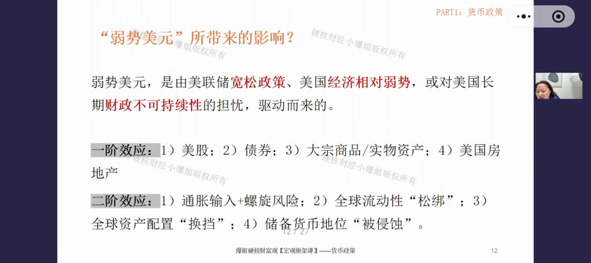
弱美元由美联储宽松政策、美国经济相对弱势、或对美国长期财政不可持续性的担忧驱动，很多东西与强美元相反。
一阶效应（直接影响）
- 股市：对跨国公司利多（海外资金换回更多美元、账面膨胀、出口竞争力提升）；对内需/进口依赖型企业利空（进口原材料变贵 → 成本上升 → 要么吃利润、要么提价伤销量）。
- 债券（美债/信用债）：压力偏大、偏空。外国投资者持美元资产将来换汇有汇率损失，通胀还会侵蚀实际购买力 → 资金减配甚至撤出 → 美国必须给更高利率留人 → 长期收益率上升、债券价格下跌 → 政府融资成本被动上升。
- 大宗商品/实物资产：利多。美元贬值 = 非美国家买大宗商品"打折" → 全球需求被刺激；同时资金寻找抗通胀资产（黄金、能源、部分地产、TIPS通胀挂钩债券）。
- 美国房地产：利多。美元贬值 → 外国买家买房变便宜 → 配置需求上升（住宅、写字楼、物流园区都受益）。
二阶效应（连锁深远影响）
- 通胀输入 + 工资价格螺旋（死亡螺旋）：弱美元 → 进口商品变贵 → 大宗商品涨价 → 企业因长期通胀预期提前涨价 → 员工要求加薪 → 成本再推高 → 再涨价……循环往复，通胀顽固、打不掉。
- 全球流动性"松绑"：美元走弱 → 美元债务还债压力减轻 → 资金成本下降 → 全球市场宽松 → 风险偏好上升 → 资金从美债等安全资产出来，寻找收益更高、增长更快的资产 → 股市、新兴市场跟着好起来。
- 全球资产配置"换挡"：资金预期通胀抬头、名义利率压不住通胀 → 从对通胀敏感的债券、现金换到股票（能源/资源/消费龙头）、黄金、实物资产、TIPS。这是资产管理行业为避免实际购买力下降所做的结构性转型，影响深远，不是短期进出。
- 储备货币地位"被侵蚀"：长期弱美元+温和通胀 = 美国在软性吸食债务 → 全球央行、主权基金对美元作为存储工具的价值产生动摇 → 减少美元配置、增配黄金等非美元资产 → 去美元化。这本质是用全球资金在化债，是杀伤力最大的风险。
小结：强美元 = 表面经济霸权、实质收紧全球流动性；弱美元 = 表面利好出口推升资产、实质侵蚀储备货币地位。两个方向都"不太好弄"。
十二、两大架构师：美联储与财政部的政策反应函数
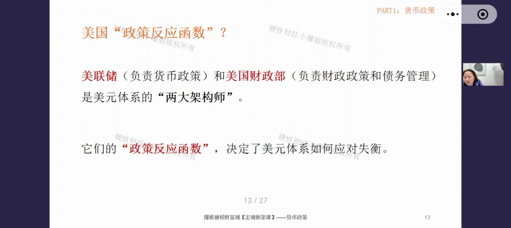
美元体系非常复杂，但有两个重要角色在一定程度上可以对抗/修正体系的失衡——美联储（负责货币政策）和美国财政部（负责财政政策和债务管理）。它们是美元体系的"两大架构师"，其政策反应函数（决策和行动）决定了美元体系如何应对失衡。
美联储的态度（KPI：控通胀）
- 面对强美元：高通胀初期欢迎——强美元天然有输入通缩的副作用，能帮忙把高通胀摁下去；但当二阶效应开始发力（全球流动性被收干、海外被迫去杠杆还债、反噬美国金融体系）时，美联储就会出手救火：开启央行互换额度向其他央行批发美元解决"美元荒"，或在美国自身失业率明显上升时降息转鸽。态度不是一味喜欢或讨厌，取决于处于什么阶段。
- 面对弱美元：先天敏感——弱美元推高商品价格，对通胀是火上浇油。若判断美元长期贬值、物价守不住，就会加息缩表收紧流动性；严重时大幅加息捍卫货币。
美国财政部的态度（KPI：低融资成本）
- 强美元 = 一半甜、一半疼：甜——海外资金涌入，美债买盘旺盛 → 发债成本降低、利息减少，所以美国官方永远喊"强势美元政策"；疼——贸易逆差扩大、出口竞争力被挤压，中低端制造业和蓝领（关键票仓）受损 → 财政面对压力会加征关税、打贸易战，甚至搞1985年广场协议式联合施压让美元贬值。
- 弱美元 = 噩梦：弱美元抬高通胀 → 市场要求更高利率（要扣除通胀溢价）→ 国债利率被拉抬 → 利息支出变大、发债变难。所以财政部嘴上喊强势美元稳定市场，对内却拼命压利率（要求美联储QE、降息）。
现状（课程时点）：美国已走到债务周期末端（财政纪律问题大到出现债汇双杀信号）；财政主导逐渐上位——财政支出中利息已排到第二；财政施压下美联储独立性受挑战，出现妥协可能（今天鹰、明天鸽）。两大部门的KPI不同：美联储要强美元、高利率遏制通胀；财政部要弱美元、低利率维持债务可持续。
终极手段：金融抑制
- 没有太好的办法，只能"没办法里的办法"——金融抑制：把名义利率压在不太高的位置（太高会拉爆财政），同时允许通胀在相对偏高但不失控的位置徘徊；
- 结果：实际利率 = 名义利率 − 通胀 ≈ 为负。长债持有者账面拿到利息，实际购买力却在被"剪羊毛"；
- 政府拉长时间、温水煮青蛙，把债务占GDP的比重一点点磨下来——这就是化债。现在美国已经在这样的结构上徘徊（通胀没压到底、却已开始宽松，就是让实际利率为负、以时间换空间）。
十三、总结：美元是全球流动性的总阀门
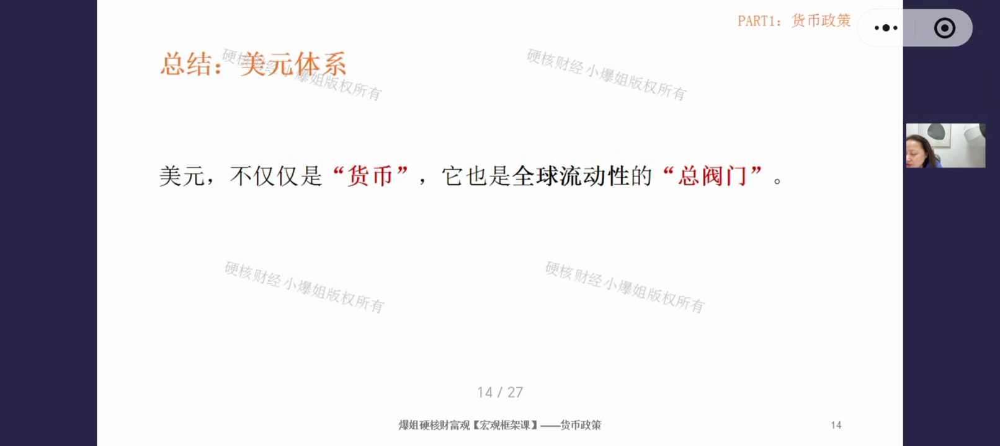
美元，不仅仅是"货币"，它也是全球流动性的"总阀门"。美元收紧一点、放松一点，对所有资产的流动性都有影响——必须花更多时间盯美元。
- 强美元周期：表面上看是证明了美国的经济霸权；本质上是收紧全球信贷流动性、带来流动性危机，最后像回旋镖一样击中美国自身，导致其金融不稳定。
- 弱美元周期：表面上看利好出口、推升名义资产价格；本质上是侵蚀美元储备货币地位，引发长期结构性滞胀风险。
- 终极博弈：美联储（强美元、高利率遏制通胀）vs 财政部（弱美元、低利率维持债务可持续）。趋势已从货币主导转向财政主导，美联储独立性正在被逐步削弱——丧失到什么程度是打问号的。
- 世界观：全球是"你中有我、我中有你"的大同世界。想做透宏观，必须跨洲、跨国家、跨货币、跨资产地理解——美国的事跟我们每个人都有关。
- 下节预告：人民币体系和日元体系——与美元完全不同的两套框架；汇率课结束后会做一次货币政策总盘点。
方法论：学宏观的价值不是记结论，而是把离散的知识点串成一个体系、建立思考能力。结论不值钱，分析能力才值钱。
课程知识卡片（专业版）
以下为课程配套的专业版知识卡片，标题为"货币政策第13期：汇率（6）——美元体系的结构性特权与强弱周期资产映射"，汇总了本期核心知识点的完整框架。

专业版卡片文字摘要
- 课程简介：本节课深入探讨了全球流动性总阀门——美元体系。课程从汇率与国债的基础规律切入，剖析了债汇"双杀/双升"背后的宏观极端异常；核心解析了美国作为储备货币国享有的五大结构性特权（资本成本降低、估值中枢抬升、便利收益、避险属性与通胀性去杠杆）；在此基础上全景推演了"强美元"与"弱美元"周期下，对全球股市、债市、大宗商品产生的一阶直击与二阶深远影响；最后透过美联储与财政部的政策博弈，揭示了美国化解巨额债务的终极手段——"金融抑制"。
- 知识点1：债汇的常态与异常（双杀与双升）。常态逻辑：利率高、汇率强；利率低、汇率弱（国债价格与收益率反向，收益率与汇率同向）。异常1 债汇双杀：国债大跌（收益率狂飙）叠加汇率暴跌，预示极端的财政失衡与主权信用危机（如新兴市场崩溃或特拉斯时期的英国），资金不计成本出逃。异常2 债汇双升：国债大涨（收益率下降）叠加汇率走强，通常在极度通缩或全球金融危机时出现，避险情绪驱使资金涌入安全资产（典型如08年危机的美元美债）。实践运用：投资中若观察到一国债汇双杀，切勿贪图其飙升的高利息，因为这往往是主权信用破产的前兆，本金和汇率的双重损失将带来毁灭性打击。
- 知识点2：美元体系的结构性特权。特权1&2（压低资本成本与推升估值）：全球贸易结算、稳汇率及避险的刚需，造就了美债源源不断的"结构性买盘"，变相将美债收益率压低了50-100个基点；无风险利率的下降，直接放大了现金流折现模型中的现值，从而抬升了美股的估值中枢。特权3&4（便利收益与避险属性）：极深的流动性赋予其"便利收益"；危机爆发时，美元变身"防爆仓的氧气罐"，美债成为唯一能承载巨量资金的"超级停车场"。特权5（通胀性去杠杆）：不同于新兴市场遭遇危机时只能被动加息并承受经济崩溃，美国可通过超发货币制造通胀，使名义经济增速大于利率，从而稀释实际债务杠杆。实践运用：美股常年享有估值溢价，并非全靠企业盈利，储备货币地位带来的"无汇率风险"与"低无风险利率"是极其核心的底层加分项。
- 知识点3：强弱美元周期的一阶与二阶效应。强美元周期——一阶：利空跨国公司（汇兑损失）、利空大宗商品（计价变贵）；若因加息走强则利空美债，若因避险走强则利多美债。二阶：收紧全球流动性，碾压高外债新兴国家；全球需求衰退最终会回旋反噬美国自身经济。弱美元周期——一阶：利好跨国公司及美国出口，利多大宗商品及抗通胀资产；利空美债（资金外逃，要求更高利率）。二阶：松绑全球流动性，推升风险偏好；但易引发顽固的工资-价格通胀螺旋，长期则会动摇市场对美元的信任，加速去美元化。实践运用：美元与美股不存在绝对的正负相关。看盘必须透视驱动力——若因美国经济一枝独秀或避险情绪，则美元美股双涨；若因加息导致跨国企业利润受损，则呈现"强美元、弱美股"。
- 知识点4：财政与央行的博弈及"金融抑制"。KPI分歧：美联储KPI是控通胀（偏好强美元/高利率抑制物价）；财政部KPI是降低债务利息支出（偏好强势美元引流，但痛恨强势美元打击出口，极度恐惧弱美元推高通胀进而拉爆国债利率）。终极化债手段（金融抑制）：随着美国债务不可持续，财政逐渐压制央行独立性。最终解决方案是维持温和偏高的通胀，同时压制名义利率不使其飙升，人为制造"负实际利率"。实践运用："金融抑制"本质上是通过时间换空间，用"温水煮青蛙"的方式隐性剥夺长债持有者的实际购买力来化解国家债务。在此宏观背景下，长期持有单一法币现金或名义固收资产，将面临被悄无声息"剪羊毛"的必然结局。
- 课程总结：美元不仅仅是美国的本币，更是主导全球流动性的总阀门。美国凭借储备货币的独特地位，享受着低廉融资、高估值中枢与危机避险的专属红利。在强弱美元的周期摇摆中，其一阶与二阶效应在股市、债市、大宗商品间激荡，且往往伴随复杂的非线性传导（如强美元的全球收割与最终反噬）。当下，面对堆积如山的巨浪债务，美国财政主导权正逐渐压过货币独立性——看透美国必然走向"金融抑制"（实际利率为负）以稀释债务的底牌，是我们在全球大类资产配置中趋利避害、抵御隐性收割的核心宏观视野。
课程知识卡片（极简版）
以下为极简版知识卡片（副标题：看懂美元潮汐，守护你的钱袋子），用问答形式快速回顾核心概念。
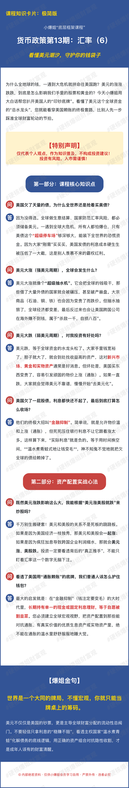
极简版卡片文字摘要
- Q：美国欠了天量的债，为什么全世界还是抢着买美债？
A：因为没得选。全球做生意结算、国家防范汇率风险，都必须储备美元。一遇到全球大危机，所有人都怕爆仓，只有美债这个"超级停车场"够深够大，能装下全世界的恐慌资金。因为大家"刚需"买买买，美国发债的利息成本硬生生被压低了一大截，这是别人羡慕不来的霸权红利。
- Q：美元大涨（强美元周期），全球会发生什么？
A：美元大涨就像个"超级抽水机"。它会把全球的钱吸干，那些借了大量外债的国家就会被碾压，甚至破产崩盘。大宗商品（石油、铜、铁）也会因为变贵了而跌价。但抽水抽狠了，全球经济都变差，最后反过来也会让美国跨国公司在海外赚不到钱，属于"杀敌一千，自损八百"。
- Q：美元大跌（弱美元周期），对我投资有好处吗？
A：美元跌，等于全球资金的水龙头松了。大家手里钱宽裕了、胆子大了，就会到处找收益高的资产，这对新兴市场、黄金和实物资产通常是好消息。但坏处是，美国买东西变贵了，容易引发顽固的物价上涨（通胀）；如果一直跌，大家就会觉得美元不靠谱，慢慢开始"去美元化"。
- Q：美国欠了一屁股债，利息都快还不起了，最后到底怎么收场？
A：终极大招叫"金融抑制"。简单说，就是允许物价温和上涨（通胀），但死死压住银行利息不让它跟着涨太多。这样算下来，"实际利息"就是负的——等于用时间换空间，温水煮青蛙式地让钱变毛，神不知鬼不觉地把欠全球的债赖掉。
- Q：既然美元涨跌影响这么大，我能根据"美元涨美股就跌"来炒股吗？
A：千万别生搬硬套！美元和美股的关系不是死板的跷跷板。如果是因为美国经济一枝独秀，那美元和美股会一起涨；如果是因为疯狂加息导致跨国企业利润缩水，那就会美元涨、美股跌。投资一定要看透背后的"真正推手"，不能只盯着汇率这一个数字无脑下注。
- Q：看透了美国用"通胀赖账"的底牌，普通人该怎么护住钱包？
A：最大的启发就是：在"金融抑制"（钱注定要变毛）的大时代里，长期持有单一的现金或固定利息理财，等于自愿被割韭菜。必须建立全球宏观视野，把资产配置到那些能对抗通胀、有真实价值的优质生息资产或实物资产里，绝不能在通胀的温水里舒舒服服地睡大觉。
- 爆姐金句："世界是一个大同的牌局，不懂宏观，你就只能当牌桌上的筹码。"美元不仅仅是美国的钞票，更是主导全球财富分配的流动性总阀门。不要轻信只拿利息的"稳赚不赔"，看透主权国家"温水煮青蛙"化解债务的底线逻辑，用正确的资产组合对抗隐性收割，才是成年人该有的财富清醒。